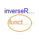
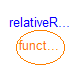
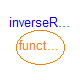
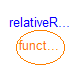


 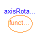
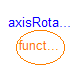


 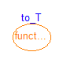
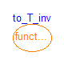
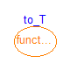
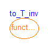
 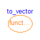
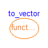
 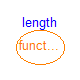
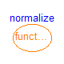
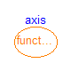
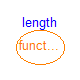
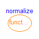
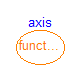
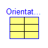
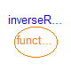
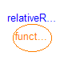
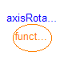
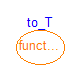
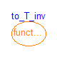
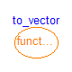
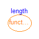
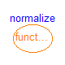
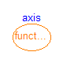
Package Frames contains type definitions and functions to transform rotational frame quantities. The basic idea is to hide the actual definition of an orientation in this package by providing essentially type Orientation together with functions operating on instances of this type.
In the table below an example is given for every function definition. The used variables have the following declaration:
Frames.Orientation R, R1, R2, R_rel, R_inv; Real[3,3] T, T_inv; Real[3] v1, v2, w1, w2, n_x, n_y, n_z, e, e_x, res_ori, phi; Real[6] res_equal; Real L, angle;
| Function/type | Description |
|---|---|
| Orientation R; | New type defining an orientation object that describes the rotation of frame 1 into frame 2. |
| res_ori = orientationConstraint(R); | Return the constraints between the variables of an orientation object (shall be zero). |
| w1 = angularVelocity1(R); | Return angular velocity resolved in frame 1 from orientation object R. |
| w2 = angularVelocity2(R); | Return angular velocity resolved in frame 2 from orientation object R. |
| v1 = resolve1(R,v2); | Transform vector v2 from frame 2 to frame 1. |
| v2 = resolve2(R,v1); | Transform vector v1 from frame 1 to frame 2. |
| v2 = resolveRelative(v1,R1,R2); | Transform vector v1 from frame 1 to frame 2 using absolute orientation objects R1 of frame 1 and R2 of frame 2. |
| D1 = resolveDyade1(R,D2); | Transform second order tensor D2 from frame 2 to frame 1. |
| D2 = resolveDyade2(R,D1); | Transform second order tensor D1 from frame 1 to frame 2. |
| R = nullRotation() | Return orientation object R that does not rotate a frame. |
| R_inv = inverseRotation(R); | Return inverse orientation object. |
| R_rel = relativeRotation(R1,R2); | Return relative orientation object from two absolute orientation objects. |
| R2 = absoluteRotation(R1,R_rel); | Return absolute orientation object from another
absolute and a relative orientation object. |
| R = planarRotation(e, angle, der_angle); | Return orientation object of a planar rotation. |
| angle = planarRotationAngle(e, v1, v2); | Return angle of a planar rotation, given the rotation axis and the representations of a vector in frame 1 and frame 2. |
| R = axisRotation(axis, angle, der_angle); | Return orientation object R to rotate around angle along axis of frame 1. |
| R = axesRotations(sequence, angles, der_angles); | Return rotation object to rotate in sequence around 3 axes. Example: R = axesRotations({1,2,3},{pi/2,pi/4,-pi}, zeros(3)); |
| angles = axesRotationsAngles(R, sequence); | Return the 3 angles to rotate in sequence around 3 axes to construct the given orientation object. |
| phi = smallRotation(R); | Return rotation angles phi valid for a small rotation R. |
| R = from_nxy(n_x, n_y); | Return orientation object from n_x and n_y vectors. |
| R = from_nxz(n_x, n_z); | Return orientation object from n_x and n_z vectors. |
| R = from_T(T,w); | Return orientation object R from transformation matrix T and its angular velocity w. |
| R = from_T_inv(T_inv,w); | Return orientation object R from inverse transformation matrix T_inv and its angular velocity w. |
| R = from_Q(Q,w); | Return orientation object R from quaternion orientation object Q and its angular velocity w. |
| T = to_T(R); | Return transformation matrix T from orientation object R. |
| T_inv = to_T_inv(R); | Return inverse transformation matrix T_inv from orientation object R. |
| Q = to_Q(R); | Return quaternione orientation object Q from orientation object R. |
| exy = to_exy(R); | Return [e_x, e_y] matrix of an orientation object R, with e_x and e_y vectors of frame 2, resolved in frame 1. |
| L = length(n_x); | Return length L of a vector n_x. |
| e_x = normalize(n_x); | Return normalized vector e_x of n_x such that length of e_x is one. |
| e = axis(i); | Return unit vector e directed along axis i |
| Quaternions | Package with functions to transform rotational frame quantities based on quaternions (also called Euler parameters). |
| TransformationMatrices | Package with functions to transform rotational frame quantities based on transformation matrices. |
| Name | Description |
|---|---|
| Orientation | Orientation object defining rotation from a frame 1 into a frame 2 |
| orientationConstraint | Return residues of orientation constraints (shall be zero) |
| angularVelocity1 | Return angular velocity resolved in frame 1 from orientation object |
| angularVelocity2 | Return angular velocity resolved in frame 2 from orientation object |
| resolve1 | Transform vector from frame 2 to frame 1 |
| resolve2 | Transform vector from frame 1 to frame 2 |
| resolveRelative | Transform vector from frame 1 to frame 2 using absolute orientation objects of frame 1 and of frame 2 |
| resolveDyade1 | Transform second order tensor from frame 2 to frame 1 |
| resolveDyade2 | Transform second order tensor from frame 1 to frame 2 |
| nullRotation | Return orientation object that does not rotate a frame |
| inverseRotation | Return inverse orientation object |
| relativeRotation | Return relative orientation object |
| absoluteRotation | Return absolute orientation object from another absolute and a relative orientation object |
| planarRotation | Return orientation object of a planar rotation |
| planarRotationAngle | Return angle of a planar rotation, given the rotation axis and the representations of a vector in frame 1 and frame 2 |
| axisRotation | Return rotation object to rotate around an angle along one frame axis |
| axesRotations | Return fixed rotation object to rotate in sequence around fixed angles along 3 axes |
| axesRotationsAngles | Return the 3 angles to rotate in sequence around 3 axes to construct the given orientation object |
| smallRotation | Return rotation angles valid for a small rotation and optionally residues that should be zero |
| from_nxy | Return fixed orientation object from n_x and n_y vectors |
| from_nxz | Return fixed orientation object from n_x and n_z vectors |
| from_T | Return orientation object R from transformation matrix T |
| from_T_inv | Return orientation object R from inverse transformation matrix T_inv |
| from_Q | Return orientation object R from quaternion orientation object Q |
| to_T | Return transformation matrix T from orientation object R |
| to_T_inv | Return inverse transformation matrix T_inv from orientation object R |
| to_Q | Return quaternion orientation object Q from orientation object R |
| to_vector | Map rotation object into vector |
| to_exy | Map rotation object into e_x and e_y vectors of frame 2, resolved in frame 1 |
| length | Return length of a vector |
| normalize | Return normalized vector such that length = 1 |
| axis | Return unit vector for x-, y-, or z-axis |
| Quaternions | Functions to transform rotational frame quantities based on quaternions (also called Euler parameters) |
| TransformationMatrices | Functions for transformation matrices |
| Internal | Internal definitions that may be removed or changed (do not use) |
This object describes the rotation from a frame 1 into a frame 2. An instance of this type should never be directly accessed but only with the access functions provided in package MultiBody.Frames. As a consequence, it is not necessary to know the internal representation of this object as described in the next paragraphs.
"Orientation" is defined to be a record consisting of two elements: "Real T[3,3]", the transformation matrix to rotate frame 1 into frame 2 and "Real w[3]", the angular velocity of frame 2 with respect to frame 1, resolved in frame 2. Element "T" has the following interpretation:
Orientation R;
R.T = [ex, ey, ez];
e.g., R.T = [1,0,0; 0,1,0; 0,0,1]
where ex,ey,ez are unit vectors in the direction of the x-axis, y-axis, and z-axis of frame 1, resolved in frame 2, respectively. Therefore, if v1 is vector v resolved in frame 1 and v2 is vector v resolved in frame 2, the following relationship holds:
v2 = R.T * v1
The inverse orientation
R_inv.T = R.TT describes the rotation
from frame 2 into frame 1.
Since the orientation is described by 9 variables, there are 6 constraints between these variables. These constraints are defined in function Frames.orientationConstraint.
Formerly, w is defined as: skew(R.w) = R.T*der(transpose(R.T)) with
| 0 -w[3] w[2] |
skew(w) = | w[3] 0 -w[1] |
| -w[2] w[1] 0 |
record Orientation
"Orientation object defining rotation from a frame 1 into a frame 2"
import SI = Modelica.SIunits;
extends Modelica.Icons.Record;
Real T[3, 3] "Transformation matrix from world frame to local frame";
SI.AngularVelocity w[
3]
"Absolute angular velocity of local frame, resolved in local frame";
encapsulated function equalityConstraint
"Return the constraint residues to express that two frames have the same orientation"
import Modelica;
import Modelica.Mechanics.MultiBody.Frames;
extends Modelica.Icons.Function;
input Frames.Orientation R1 "Orientation object to rotate frame 0 into frame 1";
input Frames.Orientation R2 "Orientation object to rotate frame 0 into frame 2";
output Real residue[3]
"The rotation angles around x-, y-, and z-axis of frame 1 to rotate frame 1 into frame 2 for a small rotation (should be zero)";
algorithm
residue := {cross(R1.T[1, :], R1.T[2, :])*R2.T[2, :],-cross(R1.T[1, :],
R1.T[2, :])*R2.T[1, :],R1.T[2, :]*R2.T[1, :]};
end equalityConstraint;
end Orientation;
Modelica.Mechanics.MultiBody.Frames.orientationConstraint
| Name | Default | Description |
|---|---|---|
| R | Orientation object to rotate frame 1 into frame 2 |
| Name | Default | Description |
|---|---|---|
| residue[6] | Residues of constraints between elements of orientation object (shall be zero) |
function orientationConstraint
"Return residues of orientation constraints (shall be zero)"
extends Modelica.Icons.Function;
input Orientation R "Orientation object to rotate frame 1 into frame 2";
output Real residue[6]
"Residues of constraints between elements of orientation object (shall be zero)";
algorithm
residue := {R.T[:, 1]*R.T[:, 1] - 1,R.T[:, 2]*R.T[:, 2] - 1,R.T[:, 3]*R.T[:,
3] - 1,R.T[:, 1]*R.T[:, 2],R.T[:, 1]*R.T[:, 3],R.T[:, 2]*R.T[:, 3]};
end orientationConstraint;
Modelica.Mechanics.MultiBody.Frames.angularVelocity1
| Name | Default | Description |
|---|---|---|
| R | Orientation object to rotate frame 1 into frame 2 |
| Name | Default | Description |
|---|---|---|
| w[3] | Angular velocity of frame 2 with respect to frame 1 resolved in frame 1 [rad/s] |
function angularVelocity1
"Return angular velocity resolved in frame 1 from orientation object"
extends Modelica.Icons.Function;
input Orientation R "Orientation object to rotate frame 1 into frame 2";
output Modelica.SIunits.AngularVelocity w[ 3]
"Angular velocity of frame 2 with respect to frame 1 resolved in frame 1";
algorithm
w := resolve1(R, R.w);
end angularVelocity1;
Modelica.Mechanics.MultiBody.Frames.angularVelocity2
| Name | Default | Description |
|---|---|---|
| R | Orientation object to rotate frame 1 into frame 2 |
| Name | Default | Description |
|---|---|---|
| w[3] | Angular velocity of frame 2 with respect to frame 1 resolved in frame 2 [rad/s] |
function angularVelocity2
"Return angular velocity resolved in frame 2 from orientation object"
extends Modelica.Icons.Function;
input Orientation R "Orientation object to rotate frame 1 into frame 2";
output Modelica.SIunits.AngularVelocity w[ 3]
"Angular velocity of frame 2 with respect to frame 1 resolved in frame 2";
algorithm
w := R.w;
end angularVelocity2;
Modelica.Mechanics.MultiBody.Frames.resolve1
| Name | Default | Description |
|---|---|---|
| R | Orientation object to rotate frame 1 into frame 2 | |
| v2[3] | Vector in frame 2 |
| Name | Default | Description |
|---|---|---|
| v1[3] | Vector in frame 1 |
function resolve1 "Transform vector from frame 2 to frame 1" annotation(derivative=Internal.resolve1_der); extends Modelica.Icons.Function; input Orientation R "Orientation object to rotate frame 1 into frame 2"; input Real v2[3] "Vector in frame 2"; output Real v1[3] "Vector in frame 1"; algorithm v1 := transpose(R.T)*v2; end resolve1;
Modelica.Mechanics.MultiBody.Frames.resolve2
| Name | Default | Description |
|---|---|---|
| R | Orientation object to rotate frame 1 into frame 2 | |
| v1[3] | Vector in frame 1 |
| Name | Default | Description |
|---|---|---|
| v2[3] | Vector in frame 2 |
function resolve2 "Transform vector from frame 1 to frame 2" annotation(derivative=Internal.resolve2_der); extends Modelica.Icons.Function; input Orientation R "Orientation object to rotate frame 1 into frame 2"; input Real v1[3] "Vector in frame 1"; output Real v2[3] "Vector in frame 2"; algorithm v2 := R.T*v1; end resolve2;
| Name | Default | Description |
|---|---|---|
| v1[3] | Vector in frame 1 | |
| R1 | Orientation object to rotate frame 0 into frame 1 | |
| R2 | Orientation object to rotate frame 0 into frame 2 |
| Name | Default | Description |
|---|---|---|
| v2[3] | Vector in frame 2 |
function resolveRelative "Transform vector from frame 1 to frame 2 using absolute orientation objects of frame 1 and of frame 2" extends Modelica.Icons.Function; input Real v1[3] "Vector in frame 1"; input Orientation R1 "Orientation object to rotate frame 0 into frame 1"; input Orientation R2 "Orientation object to rotate frame 0 into frame 2"; output Real v2[3] "Vector in frame 2"; algorithm v2 := resolve2(R2, resolve1(R1, v1)); end resolveRelative;
Modelica.Mechanics.MultiBody.Frames.resolveDyade1
| Name | Default | Description |
|---|---|---|
| R | Orientation object to rotate frame 1 into frame 2 | |
| D2[3, 3] | Second order tensor resolved in frame 2 |
| Name | Default | Description |
|---|---|---|
| D1[3, 3] | Second order tensor resolved in frame 1 |
function resolveDyade1 "Transform second order tensor from frame 2 to frame 1" extends Modelica.Icons.Function; input Orientation R "Orientation object to rotate frame 1 into frame 2"; input Real D2[3, 3] "Second order tensor resolved in frame 2"; output Real D1[3, 3] "Second order tensor resolved in frame 1"; algorithm D1 := transpose(R.T)*D2*R.T; end resolveDyade1;
| Name | Default | Description |
|---|---|---|
| R | Orientation object to rotate frame 1 into frame 2 | |
| D1[3, 3] | Second order tensor resolved in frame 1 |
| Name | Default | Description |
|---|---|---|
| D2[3, 3] | Second order tensor resolved in frame 2 |
function resolveDyade2 "Transform second order tensor from frame 1 to frame 2" extends Modelica.Icons.Function; input Orientation R "Orientation object to rotate frame 1 into frame 2"; input Real D1[3, 3] "Second order tensor resolved in frame 1"; output Real D2[3, 3] "Second order tensor resolved in frame 2"; algorithm D2 := R.T*D1*transpose(R.T); end resolveDyade2;
| Name | Default | Description |
|---|---|---|
| R | Orientation object such that frame 1 and frame 2 are identical |
function nullRotation
"Return orientation object that does not rotate a frame"
extends Modelica.Icons.Function;
output Orientation R
"Orientation object such that frame 1 and frame 2 are identical";
algorithm
R := Orientation(T=identity(3),w= zeros(3));
end nullRotation;
| Name | Default | Description |
|---|---|---|
| R | Orientation object to rotate frame 1 into frame 2 |
| Name | Default | Description |
|---|---|---|
| R_inv | Orientation object to rotate frame 2 into frame 1 |
function inverseRotation "Return inverse orientation object" extends Modelica.Icons.Function; input Orientation R "Orientation object to rotate frame 1 into frame 2"; output Orientation R_inv "Orientation object to rotate frame 2 into frame 1"; algorithm R_inv := Orientation(T=transpose(R.T),w= -resolve1(R, R.w)); end inverseRotation;
| Name | Default | Description |
|---|---|---|
| R1 | Orientation object to rotate frame 0 into frame 1 | |
| R2 | Orientation object to rotate frame 0 into frame 2 |
| Name | Default | Description |
|---|---|---|
| R_rel | Orientation object to rotate frame 1 into frame 2 |
function relativeRotation "Return relative orientation object"
extends Modelica.Icons.Function;
input Orientation R1 "Orientation object to rotate frame 0 into frame 1";
input Orientation R2 "Orientation object to rotate frame 0 into frame 2";
output Orientation R_rel "Orientation object to rotate frame 1 into frame 2";
algorithm
R_rel := Orientation(T=R2.T*transpose(R1.T),w= R2.w - resolve2(R2, resolve1(
R1, R1.w)));
end relativeRotation;
Modelica.Mechanics.MultiBody.Frames.absoluteRotation
| Name | Default | Description |
|---|---|---|
| R1 | Orientation object to rotate frame 0 into frame 1 | |
| R_rel | Orientation object to rotate frame 1 into frame 2 |
| Name | Default | Description |
|---|---|---|
| R2 | Orientation object to rotate frame 0 into frame 2 |
function absoluteRotation "Return absolute orientation object from another absolute and a relative orientation object" extends Modelica.Icons.Function; input Orientation R1 "Orientation object to rotate frame 0 into frame 1"; input Orientation R_rel "Orientation object to rotate frame 1 into frame 2"; output Orientation R2 "Orientation object to rotate frame 0 into frame 2"; algorithm R2 := Orientation(T=R_rel.T*R1.T,w= resolve2(R_rel, R1.w) + R_rel.w); end absoluteRotation;
Modelica.Mechanics.MultiBody.Frames.planarRotation
| Name | Default | Description |
|---|---|---|
| e[3] | Normalized axis of rotation (must have length=1) | |
| angle | Rotation angle to rotate frame 1 into frame 2 along axis e [rad] | |
| der_angle | = der(angle) [rad/s] |
| Name | Default | Description |
|---|---|---|
| R | Orientation object to rotate frame 1 into frame 2 |
function planarRotation
"Return orientation object of a planar rotation"
import Modelica.Math;
extends Modelica.Icons.Function;
input Real e[3] "Normalized axis of rotation (must have length=1)";
input Modelica.SIunits.Angle angle
"Rotation angle to rotate frame 1 into frame 2 along axis e";
input Modelica.SIunits.AngularVelocity der_angle "= der(angle)";
output Orientation R "Orientation object to rotate frame 1 into frame 2";
algorithm
R := Orientation(T=[e]*transpose([e]) + (identity(3) - [e]*transpose([e]))*
Math.cos(angle) - skew(e)*Math.sin(angle),w= e*der_angle);
end planarRotation;
Modelica.Mechanics.MultiBody.Frames.planarRotationAngle
A call to this function of the form
Real[3] e, v1, v2;
Modelica.SIunits.Angle angle;
equation
angle = planarRotationAngle(e, v1, v2);
computes the rotation angle "angle" of a planar rotation along unit vector e, rotating frame 1 into frame 2, given the coordinate representations of a vector "v" in frame 1 (v1) and in frame 2 (v2). Therefore, the result of this function fulfills the following equation:
v2 = resolve2(planarRotation(e,angle), v1)
The rotation angle is returned in the range
-p <= angle <= p
This function makes the following assumptions on the input arguments
The function does not check the above assumptions. If these assumptions are violated, a wrong result will be returned and/or a division by zero will occur.
| Name | Default | Description |
|---|---|---|
| e[3] | Normalized axis of rotation to rotate frame 1 around e into frame 2 (must have length=1) | |
| v1[3] | A vector v resolved in frame 1 (shall not be parallel to e) | |
| v2[3] | Vector v resolved in frame 2, i.e., v2 = resolve2(planarRotation(e,angle),v1) |
| Name | Default | Description |
|---|---|---|
| angle | Rotation angle to rotate frame 1 into frame 2 along axis e in the range: -pi <= angle <= pi [rad] |
function planarRotationAngle
"Return angle of a planar rotation, given the rotation axis and the representations of a vector in frame 1 and frame 2"
extends Modelica.Icons.Function;
input Real e[3]
"Normalized axis of rotation to rotate frame 1 around e into frame 2 (must have length=1)";
input Real v1[3]
"A vector v resolved in frame 1 (shall not be parallel to e)";
input Real v2[3]
"Vector v resolved in frame 2, i.e., v2 = resolve2(planarRotation(e,angle),v1)";
output Modelica.SIunits.Angle angle
"Rotation angle to rotate frame 1 into frame 2 along axis e in the range: -pi <= angle <= pi";
algorithm
/* Vector v is resolved in frame 1 and frame 2 according to:
(1) v2 = (e*transpose(e) + (identity(3) - e*transpose(e))*cos(angle) - skew(e)*sin(angle))*v1;
= e*(e*v1) + (v1 - e*(e*v1))*cos(angle) - cross(e,v1)*sin(angle)
Equation (1) is multiplied with "v1" resulting in (note: e*e = 1)
v1*v2 = (e*v1)*(e*v2) + (v1*v1 - (e*v1)*(e*v1))*cos(angle)
and therefore:
(2) cos(angle) = ( v1*v2 - (e*v1)*(e*v2)) / (v1*v1 - (e*v1)*(e*v1))
Similiarly, equation (1) is multiplied with cross(e,v1), i.e., a
a vector that is orthogonal to e and to v1:
cross(e,v1)*v2 = - cross(e,v1)*cross(e,v1)*sin(angle)
and therefore:
(3) sin(angle) = -cross(e,v1)*v2/(cross(e,v1)*cross(e,v1));
We have e*e=1; Therefore:
(4) v1*v1 - (e*v1)*(e*v1) = |v1|^2 - (|v1|*cos(e,v1))^2
and
(5) cross(e,v1)*cross(e,v1) = (|v1|*sin(e,v1))^2
= |v1|^2*(1 - cos(e,v1)^2)
= |v1|^2 - (|v1|*cos(e,v1))^2
The denominators of (2) and (3) are identical, according to (4) and (5).
Furthermore, the denominators are always positive according to (5).
Therefore, in the equation "angle = atan2(sin(angle), cos(angle))" the
denominators of sin(angle) and cos(angle) can be removed,
resulting in:
angle = atan2(-cross(e,v1)*v2, v1*v2 - (e*v1)*(e*v2));
*/
angle := Modelica.Math.atan2(-cross(e, v1)*v2, v1*v2 - (e*v1)*(e*v2));
end planarRotationAngle;
| Name | Default | Description |
|---|---|---|
| axis | Rotate around 'axis' of frame 1 | |
| angle | Rotation angle to rotate frame 1 into frame 2 along 'axis' of frame 1 [rad] | |
| der_angle | = der(angle) [rad] |
| Name | Default | Description |
|---|---|---|
| R | Orientation object to rotate frame 1 into frame 2 |
function axisRotation
"Return rotation object to rotate around an angle along one frame axis"
import Modelica.Math.*;
extends Modelica.Icons.Function;
input Integer axis(min=1, max=3) "Rotate around 'axis' of frame 1";
input Modelica.SIunits.Angle angle
"Rotation angle to rotate frame 1 into frame 2 along 'axis' of frame 1";
input Modelica.SIunits.Angle der_angle "= der(angle)";
output Orientation R "Orientation object to rotate frame 1 into frame 2";
algorithm
R := Orientation(T=(if axis == 1 then [1, 0, 0; 0, cos(angle), sin(angle);
0, -sin(angle), cos(angle)] else if axis == 2 then [cos(angle), 0, -sin(
angle); 0, 1, 0; sin(angle), 0, cos(angle)] else [cos(angle), sin(angle),
0; -sin(angle), cos(angle), 0; 0, 0, 1]),w= if axis == 1 then {der_angle,
0,0} else if axis == 2 then {0,der_angle,0} else {0,0,der_angle});
end axisRotation;
Modelica.Mechanics.MultiBody.Frames.axesRotations
| Name | Default | Description |
|---|---|---|
| sequence[3] | {1,2,3} | Sequence of rotations from frame 1 to frame 2 along axis sequence[i] |
| angles[3] | Rotation angles around the axes defined in 'sequence' [rad] | |
| der_angles[3] | = der(angles) [rad/s] |
| Name | Default | Description |
|---|---|---|
| R | Orientation object to rotate frame 1 into frame 2 |
function axesRotations
"Return fixed rotation object to rotate in sequence around fixed angles along 3 axes"
import TM = Modelica.Mechanics.MultiBody.Frames.TransformationMatrices;
extends Modelica.Icons.Function;
input Integer sequence[3](
min={1,1,1},
max={3,3,3}) = {1,2,3}
"Sequence of rotations from frame 1 to frame 2 along axis sequence[i]";
input Modelica.SIunits.Angle angles[ 3]
"Rotation angles around the axes defined in 'sequence'";
input Modelica.SIunits.AngularVelocity der_angles[ 3] "= der(angles)";
output Orientation R "Orientation object to rotate frame 1 into frame 2";
algorithm
/*
R := absoluteRotation(absoluteRotation(axisRotation(sequence[1], angles[1],
der_angles[1]), axisRotation(sequence[2], angles[2], der_angles[2])),
axisRotation(sequence[3], angles[3], der_angles[3]));
*/
R := Orientation(T=TM.axisRotation(sequence[3], angles[3])*TM.axisRotation(
sequence[2], angles[2])*TM.axisRotation(sequence[1], angles[1]),w=
Frames.axis(sequence[3])*der_angles[3] + TM.resolve2(TM.axisRotation(
sequence[3], angles[3]), Frames.axis(sequence[2])*der_angles[2]) +
TM.resolve2(TM.axisRotation(sequence[3], angles[3])*TM.axisRotation(
sequence[2], angles[2]), Frames.axis(sequence[1])*der_angles[1]));
end axesRotations;
A call to this function of the form
Frames.Orientation R;
parameter Integer sequence[3] = {1,2,3};
Modelica.SIunits.Angle angles[3];
equation
angle = axesRotationAngles(R, sequence);
computes the rotation angles "angles[1:3]" to rotate frame 1 into frame 2 along axes sequence[1:3], given the orientation object R from frame 1 to frame 2. Therefore, the result of this function fulfills the following equation:
R = axesRotation(sequence, angles)
The rotation angles are returned in the range
-p <= angles[i] <= p
There are two solutions for "angles[1]" in this range. Via the third argument guessAngle1 (default = 0) the returned solution is selected such that |angles[1] - guessAngle1| is minimal. The orientation object R may be in a singular configuration, i.e., there is an infinite number of angle values leading to the same R. The returned solution is selected by setting angles[1] = guessAngle1. Then angles[2] and angles[3] can be uniquely determined in the above range.
Note, that input argument sequence has the restriction that only values 1,2,3 can be used and that sequence[1] ≠ sequence[2] and sequence[2] ≠ sequence[3]. Often used values are:
sequence = {1,2,3} // Cardan angle sequence
= {3,1,3} // Euler angle sequence
= {3,2,1} // Tait-Bryan angle sequence
| Name | Default | Description |
|---|---|---|
| R | Orientation object to rotate frame 1 into frame 2 | |
| sequence[3] | {1,2,3} | Sequence of rotations from frame 1 to frame 2 along axis sequence[i] |
| guessAngle1 | 0 | Select angles[1] such that |angles[1] - guessAngle1| is a minimum [rad] |
| Name | Default | Description |
|---|---|---|
| angles[3] | Rotation angles around the axes defined in 'sequence' such that R=Frames.axesRotation(sequence,angles); -pi < angles[i] <= pi [rad] |
function axesRotationsAngles
"Return the 3 angles to rotate in sequence around 3 axes to construct the given orientation object"
import SI = Modelica.SIunits;
extends Modelica.Icons.Function;
input Orientation R "Orientation object to rotate frame 1 into frame 2";
input Integer sequence[3](
min={1,1,1},
max={3,3,3}) = {1,2,3}
"Sequence of rotations from frame 1 to frame 2 along axis sequence[i]";
input SI.Angle guessAngle1 = 0
"Select angles[1] such that |angles[1] - guessAngle1| is a minimum";
output SI.Angle angles[ 3]
"Rotation angles around the axes defined in 'sequence' such that R=Frames.axesRotation(sequence,angles); -pi < angles[i] <= pi";
protected
Real e1_1[3] "First rotation axis, resolved in frame 1";
Real e2_1a[3] "Second rotation axis, resolved in frame 1a";
Real e3_1[3] "Third rotation axis, resolved in frame 1";
Real e3_2[3] "Third rotation axis, resolved in frame 2";
Real A "Coefficient A in the equation A*cos(angles[1])+B*sin(angles[1]) = 0";
Real B "Coefficient B in the equation A*cos(angles[1])+B*sin(angles[1]) = 0";
SI.Angle angle_1a "Solution 1 for angles[1]";
SI.Angle angle_1b "Solution 2 for angles[1]";
TransformationMatrices.Orientation T_1a
"Orientation object to rotate frame 1 into frame 1a";
algorithm
/* The rotation object R is constructed by:
(1) Rotating frame 1 along axis e1 (= axis sequence[1]) with angles[1]
arriving at frame 1a.
(2) Rotating frame 1a along axis e2 (= axis sequence[2]) with angles[2]
arriving at frame 1b.
(3) Rotating frame 1b along axis e3 (= axis sequence[3]) with angles[3]
arriving at frame 2.
The goal is to determine angles[1:3]. This is performed in the following way:
1. e2 and e3 are perpendicular to each other, i.e., e2*e3 = 0;
Both vectors are resolved in frame 1 (T_ij is transformation matrix
from frame j to frame i; e1_1*e2_1a = 0, since the vectors are
perpendicular to each other):
e3_1 = T_12*e3_2
= R[sequence[3],:];
e2_1 = T_11a*e2_1a
= ( e1_1*transpose(e1_1) + (identity(3) - e1_1*transpose(e1_1))*cos(angles[1])
+ skew(e1_1)*sin(angles[1]) )*e2_1a
= e2_1a*cos(angles[1]) + cross(e1_1, e2_1a)*sin(angles[1]);
From this follows finally an equation for angles[1]
e2_1*e3_1 = 0
= (e2_1a*cos(angles[1]) + cross(e1_1, e2_1a)*sin(angles[1]))*e3_1
= (e2_1a*e3_1)*cos(angles[1]) + cross(e1_1, e2_1a)*e3_1*sin(angles[1])
= A*cos(angles[1]) + B*sin(angles[1])
with A = e2_1a*e3_1, B = cross(e1_1, e2_1a)*e3_1
This equation has two solutions in the range -pi < angles[1] <= pi:
sin(angles[1]) = k*A/sqrt(A*A + B*B)
cos(angles[1]) = -k*B/sqrt(A*A + B*B)
k = +/-1
tan(angles[1]) = k*A/(-k*B)
that is:
angles[1] = atan2(k*A, -k*B)
If A and B are both zero at the same time, there is a singular configuration
resulting in an infinite number of solutions for angles[1] (every value
is possible).
2. angles[2] is determined with function Frames.planarRotationAngle.
This function requires to provide e_3 in frame 1a and in frame 1b:
e3_1a = Frames.resolve2(planarRotation(e1_1,angles[1]), e3_1);
e3_1b = e3_2
3. angles[3] is determined with function Frames.planarRotationAngle.
This function requires to provide e_2 in frame 1b and in frame 2:
e2_1b = e2_1a
e2_2 = Frames.resolve2( R, Frames.resolve1(planarRotation(e1_1,angles[1]), e2_1a));
*/
assert(sequence[1] <> sequence[2] and sequence[2] <> sequence[3],
"input argument 'sequence[1:3]' is not valid");
e1_1 := if sequence[1] == 1 then {1,0,0} else if sequence[1] == 2 then {0,1,
0} else {0,0,1};
e2_1a := if sequence[2] == 1 then {1,0,0} else if sequence[2] == 2 then {0,
1,0} else {0,0,1};
e3_1 := R.T[sequence[3], :];
e3_2 := if sequence[3] == 1 then {1,0,0} else if sequence[3] == 2 then {0,1,
0} else {0,0,1};
A := e2_1a*e3_1;
B := cross(e1_1, e2_1a)*e3_1;
if abs(A) <= 1.e-12 and abs(B) <= 1.e-12 then
angles[1] := guessAngle1;
else
angle_1a := Modelica.Math.atan2(A, -B);
angle_1b := Modelica.Math.atan2(-A, B);
angles[1] := if abs(angle_1a - guessAngle1) <= abs(angle_1b - guessAngle1) then
angle_1a else angle_1b;
end if;
T_1a := TransformationMatrices.planarRotation(e1_1, angles[1]);
angles[2] := planarRotationAngle(e2_1a, TransformationMatrices.resolve2(
T_1a, e3_1), e3_2);
angles[3] := planarRotationAngle(e3_2, e2_1a,
TransformationMatrices.resolve2(R.T, TransformationMatrices.resolve1(T_1a,
e2_1a)));
end axesRotationsAngles;
Modelica.Mechanics.MultiBody.Frames.smallRotation
| Name | Default | Description |
|---|---|---|
| R | Orientation object to rotate frame 1 into frame 2 | |
| withResidues | false | = false/true, if 'angles'/'angles and residues' are returned in phi |
| Name | Default | Description |
|---|---|---|
| phi[if withResidues then 6 else 3] | The rotation angles around x-, y-, and z-axis of frame 1 to rotate frame 1 into frame 2 for a small rotation + optionally 3 residues that should be zero [rad] |
function smallRotation
"Return rotation angles valid for a small rotation and optionally residues that should be zero"
extends Modelica.Icons.Function;
input Orientation R "Orientation object to rotate frame 1 into frame 2";
input Boolean withResidues=false
"= false/true, if 'angles'/'angles and residues' are returned in phi";
output Modelica.SIunits.Angle phi[ if withResidues then 6 else 3]
"The rotation angles around x-, y-, and z-axis of frame 1 to rotate frame 1 into frame 2 for a small rotation + optionally 3 residues that should be zero";
algorithm
/* Planar rotation:
Trel = [e]*transpose([e]) + (identity(3) - [e]*transpose([e]))*cos(angle) - skew(e)*sin(angle)
= identity(3) - skew(e)*angle, for small angles
= identity(3) - skew(e*angle)
define phi = e*angle, then
Trel = [1, phi3, -phi2;
-phi3, 1, phi1;
phi2, -phi1, 1 ];
*/
phi := if withResidues then {R.T[2, 3],-R.T[1, 3],R.T[1, 2],R.T[1, 1] - 1,R.
T[2, 2] - 1,R.T[1, 1]*R.T[2, 2] - R.T[2, 1]*R.T[1, 2] - 1} else {R.T[2,
3],-R.T[1, 3],R.T[1, 2]};
end smallRotation;
It is assumed that the two input vectors n_x and n_y are resolved in frame 1 and are directed along the x and y axis of frame 2 (i.e., n_x and n_y are orthogonal to each other) The function returns the orientation object R to rotate from frame 1 to frame 2.
The function is robust in the sense that it returns always an orientation object R, even if n_y is not orthogonal to n_x. This is performed in the following way:
If n_x and n_y are not orthogonal to each other, first a unit vector e_y is determined that is orthogonal to n_x and is lying in the plane spanned by n_x and n_y. If n_x and n_y are parallel or nearly parallel to each other, a vector e_y is selected arbitrarily such that e_x and e_y are orthogonal to each other.
| Name | Default | Description |
|---|---|---|
| n_x[3] | Vector in direction of x-axis of frame 2, resolved in frame 1 | |
| n_y[3] | Vector in direction of y-axis of frame 2, resolved in frame 1 |
| Name | Default | Description |
|---|---|---|
| R | Orientation object to rotate frame 1 into frame 2 |
function from_nxy
"Return fixed orientation object from n_x and n_y vectors"
extends Modelica.Icons.Function;
input Real n_x[3]
"Vector in direction of x-axis of frame 2, resolved in frame 1";
input Real n_y[3]
"Vector in direction of y-axis of frame 2, resolved in frame 1";
output Orientation R "Orientation object to rotate frame 1 into frame 2";
protected
Real abs_n_x=sqrt(n_x*n_x);
Real e_x[3]=if abs_n_x < 1.e-10 then {1,0,0} else n_x/abs_n_x;
Real n_z_aux[3]=cross(e_x, n_y);
Real n_y_aux[3]=if n_z_aux*n_z_aux > 1.0e-6 then n_y else (if abs(e_x[1])
> 1.0e-6 then {0,1,0} else {1,0,0});
Real e_z_aux[3]=cross(e_x, n_y_aux);
Real e_z[3]=e_z_aux/sqrt(e_z_aux*e_z_aux);
algorithm
R := Orientation(T={e_x,cross(e_z, e_x),e_z},w= zeros(3));
end from_nxy;
It is assumed that the two input vectors n_x and n_z are resolved in frame 1 and are directed along the x and z axis of frame 2 (i.e., n_x and n_z are orthogonal to each other) The function returns the orientation object R to rotate from frame 1 to frame 2.
The function is robust in the sense that it returns always an orientation object R, even if n_z is not orthogonal to n_x. This is performed in the following way:
If n_x and n_z are not orthogonal to each other, first a unit vector e_z is determined that is orthogonal to n_x and is lying in the plane spanned by n_x and n_z. If n_x and n_z are parallel or nearly parallel to each other, a vector e_z is selected arbitrarily such that n_x and e_z are orthogonal to each other.
| Name | Default | Description |
|---|---|---|
| n_x[3] | Vector in direction of x-axis of frame 2, resolved in frame 1 | |
| n_z[3] | Vector in direction of z-axis of frame 2, resolved in frame 1 |
| Name | Default | Description |
|---|---|---|
| R | Orientation object to rotate frame 1 into frame 2 |
function from_nxz
"Return fixed orientation object from n_x and n_z vectors"
extends Modelica.Icons.Function;
input Real n_x[3]
"Vector in direction of x-axis of frame 2, resolved in frame 1";
input Real n_z[3]
"Vector in direction of z-axis of frame 2, resolved in frame 1";
output Orientation R "Orientation object to rotate frame 1 into frame 2";
protected
Real abs_n_x=sqrt(n_x*n_x);
Real e_x[3]=if abs_n_x < 1.e-10 then {1,0,0} else n_x/abs_n_x;
Real n_y_aux[3]=cross(n_z, e_x);
Real n_z_aux[3]=if n_y_aux*n_y_aux > 1.0e-6 then n_z else (if abs(e_x[1])
> 1.0e-6 then {0,0,1} else {1,0,0});
Real e_y_aux[3]=cross(n_z_aux, e_x);
Real e_y[3]=e_y_aux/sqrt(e_y_aux*e_y_aux);
algorithm
R := Orientation(T={e_x,e_y,cross(e_x, e_y)},w= zeros(3));
end from_nxz;
Modelica.Mechanics.MultiBody.Frames.from_T
| Name | Default | Description |
|---|---|---|
| T[3, 3] | Transformation matrix to transform vector from frame 1 to frame 2 (v2=T*v1) | |
| w[3] | Angular velocity from frame 2 with respect to frame 1, resolved in frame 2 (skew(w)=T*der(transpose(T))) [rad/s] |
| Name | Default | Description |
|---|---|---|
| R | Orientation object to rotate frame 1 into frame 2 |
function from_T
"Return orientation object R from transformation matrix T"
extends Modelica.Icons.Function;
input Real T[3, 3]
"Transformation matrix to transform vector from frame 1 to frame 2 (v2=T*v1)";
input Modelica.SIunits.AngularVelocity w[ 3]
"Angular velocity from frame 2 with respect to frame 1, resolved in frame 2 (skew(w)=T*der(transpose(T)))";
output Orientation R "Orientation object to rotate frame 1 into frame 2";
algorithm
R := Orientation(T=T,w= w);
end from_T;
Modelica.Mechanics.MultiBody.Frames.from_T_inv
| Name | Default | Description |
|---|---|---|
| T_inv[3, 3] | Inverse transformation matrix to transform vector from frame 2 to frame 1 (v1=T_inv*v2) | |
| w[3] | Angular velocity from frame 1 with respect to frame 2, resolved in frame 1 (skew(w)=T_inv*der(transpose(T_inv))) [rad/s] |
| Name | Default | Description |
|---|---|---|
| R | Orientation object to rotate frame 1 into frame 2 |
function from_T_inv
"Return orientation object R from inverse transformation matrix T_inv"
extends Modelica.Icons.Function;
input Real T_inv[3, 3]
"Inverse transformation matrix to transform vector from frame 2 to frame 1 (v1=T_inv*v2)";
input Modelica.SIunits.AngularVelocity w[ 3]
"Angular velocity from frame 1 with respect to frame 2, resolved in frame 1 (skew(w)=T_inv*der(transpose(T_inv)))";
output Orientation R "Orientation object to rotate frame 1 into frame 2";
algorithm
R := Orientation(T=transpose(T_inv),w= -w);
end from_T_inv;
Modelica.Mechanics.MultiBody.Frames.from_Q
| Name | Default | Description |
|---|---|---|
| Q | Quaternions orientation object to rotate frame 1 into frame 2 | |
| w[3] | Angular velocity from frame 2 with respect to frame 1, resolved in frame 2 [rad/s] |
| Name | Default | Description |
|---|---|---|
| R | Orientation object to rotate frame 1 into frame 2 |
function from_Q
"Return orientation object R from quaternion orientation object Q"
extends Modelica.Icons.Function;
input Quaternions.Orientation Q
"Quaternions orientation object to rotate frame 1 into frame 2";
input Modelica.SIunits.AngularVelocity w[ 3]
"Angular velocity from frame 2 with respect to frame 1, resolved in frame 2";
output Orientation R "Orientation object to rotate frame 1 into frame 2";
algorithm
/*
T := (2*Q[4]*Q[4] - 1)*identity(3) + 2*([Q[1:3]]*transpose([Q[1:3]]) - Q[4]*
skew(Q[1:3]));
*/
R := Orientation([2*(Q[1]*Q[1] + Q[4]*Q[4]) - 1, 2*(Q[1]*Q[2] + Q[3]*Q[4]),
2*(Q[1]*Q[3] - Q[2]*Q[4]); 2*(Q[2]*Q[1] - Q[3]*Q[4]), 2*(Q[2]*Q[2] + Q[4]
*Q[4]) - 1, 2*(Q[2]*Q[3] + Q[1]*Q[4]); 2*(Q[3]*Q[1] + Q[2]*Q[4]), 2*(Q[3]
*Q[2] - Q[1]*Q[4]), 2*(Q[3]*Q[3] + Q[4]*Q[4]) - 1],w= w);
end from_Q;
| Name | Default | Description |
|---|---|---|
| R | Orientation object to rotate frame 1 into frame 2 |
| Name | Default | Description |
|---|---|---|
| T[3, 3] | Transformation matrix to transform vector from frame 1 to frame 2 (v2=T*v1) |
function to_T
"Return transformation matrix T from orientation object R"
extends Modelica.Icons.Function;
input Orientation R "Orientation object to rotate frame 1 into frame 2";
output Real T[3, 3]
"Transformation matrix to transform vector from frame 1 to frame 2 (v2=T*v1)";
algorithm
T := R.T;
end to_T;
| Name | Default | Description |
|---|---|---|
| R | Orientation object to rotate frame 1 into frame 2 |
| Name | Default | Description |
|---|---|---|
| T_inv[3, 3] | Inverse transformation matrix to transform vector from frame 2 into frame 1 (v1=T_inv*v2) |
function to_T_inv
"Return inverse transformation matrix T_inv from orientation object R"
extends Modelica.Icons.Function;
input Orientation R "Orientation object to rotate frame 1 into frame 2";
output Real T_inv[3, 3]
"Inverse transformation matrix to transform vector from frame 2 into frame 1 (v1=T_inv*v2)";
algorithm
T_inv := transpose(R.T);
end to_T_inv;
Modelica.Mechanics.MultiBody.Frames.to_Q
| Name | Default | Description |
|---|---|---|
| R | Orientation object to rotate frame 1 into frame 2 | |
| Q_guess | Quaternions.nullRotation() | Guess value for output Q (there are 2 solutions; the one closer to Q_guess is used |
| Name | Default | Description |
|---|---|---|
| Q | Quaternions orientation object to rotate frame 1 into frame 2 |
function to_Q
"Return quaternion orientation object Q from orientation object R"
extends Modelica.Icons.Function;
input Orientation R "Orientation object to rotate frame 1 into frame 2";
input Quaternions.Orientation Q_guess = Quaternions.nullRotation()
"Guess value for output Q (there are 2 solutions; the one closer to Q_guess is used";
output Quaternions.Orientation Q
"Quaternions orientation object to rotate frame 1 into frame 2";
algorithm
Q := Quaternions.from_T(R.T, Q_guess);
end to_Q;
| Name | Default | Description |
|---|---|---|
| R | Orientation object to rotate frame 1 into frame 2 |
| Name | Default | Description |
|---|---|---|
| vec[9] | Elements of R in one vector |
function to_vector "Map rotation object into vector"
extends Modelica.Icons.Function;
input Orientation R "Orientation object to rotate frame 1 into frame 2";
output Real vec[9] "Elements of R in one vector";
algorithm
vec := {R.T[1, 1],R.T[2, 1],R.T[3, 1],R.T[1, 2],R.T[2, 2],R.T[3, 2],R.T[1,
3],R.T[2, 3],R.T[3, 3]};
end to_vector;
Modelica.Mechanics.MultiBody.Frames.to_exy
| Name | Default | Description |
|---|---|---|
| R | Orientation object to rotate frame 1 into frame 2 |
| Name | Default | Description |
|---|---|---|
| exy[3, 2] | = [e_x, e_y] where e_x and e_y are axes unit vectors of frame 2, resolved in frame 1 |
function to_exy
"Map rotation object into e_x and e_y vectors of frame 2, resolved in frame 1"
extends Modelica.Icons.Function;
input Orientation R "Orientation object to rotate frame 1 into frame 2";
output Real exy[3, 2]
"= [e_x, e_y] where e_x and e_y are axes unit vectors of frame 2, resolved in frame 1";
algorithm
exy := [R.T[1, :], R.T[2, :]];
end to_exy;
| Name | Default | Description |
|---|---|---|
| r[:] | Vector |
| Name | Default | Description |
|---|---|---|
| r_length | Length of vector r |
function length "Return length of a vector" extends Modelica.Icons.Function; input Real r[:] "Vector"; output Real r_length "Length of vector r"; algorithm r_length := sqrt(r*r); end length;
| Name | Default | Description |
|---|---|---|
| r[:] | Vector |
| Name | Default | Description |
|---|---|---|
| r_unitLength[size(r, 1)] | Input vector r normalized to length=1 |
function normalize "Return normalized vector such that length = 1" extends Modelica.Icons.Function; input Real r[:] "Vector"; output Real r_unitLength[size(r, 1)] "Input vector r normalized to length=1"; algorithm r_unitLength := if length(r) > 1.e-10 then r/length(r) else r; end normalize;
| Name | Default | Description |
|---|---|---|
| axis | Axis vector to be returned |
| Name | Default | Description |
|---|---|---|
| e[3] | Unit axis vector |
function axis "Return unit vector for x-, y-, or z-axis"
extends Modelica.Icons.Function;
input Integer axis(min=1, max=3) "Axis vector to be returned";
output Real e[3] "Unit axis vector";
algorithm
e := if axis == 1 then {1,0,0} else (if axis == 2 then {0,1,0} else {0,0,1});
end axis;